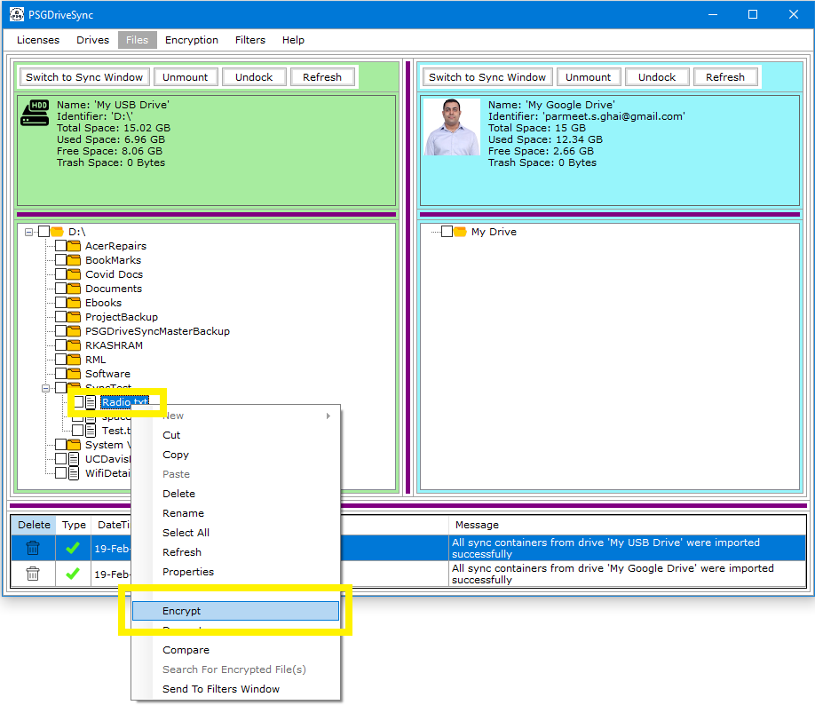

Encryption process works for both files and folders and that too in the same way. You just need to provide an encryption key tag to be used during the encryption process and that is it. For folders, one key tag is used to encrypt all the files and folders contained in a folder and all of its subfolders. The same key tag is then used to decrypt all those files which were encrypted during the encryption process.
|
1 |
Right click on the file or folder that you would like to encrypt and then click on "Encrypt" in the right click menu. |
 |
|
2 |
The next window that will pop open is going to ask for an encryption key tag to be used for the encryption process. Select one of the encryption key tag that you had created earlier and click on "Ok". |
|
|
3 |
Wait for the encryption process to complete and then either click on "Close" and just close the window showing the progress of the encryption process. |
|
|
4 |
The encrypted file should show up in the same directory or folder as the original file however it will have a number appended to it so as to distinguish it from the original unencrypted file.You can also right click on the new encrypted file and click on "Properties" in the right click menu where it should show you the encryption key tag used for encryption among other encryption details. |